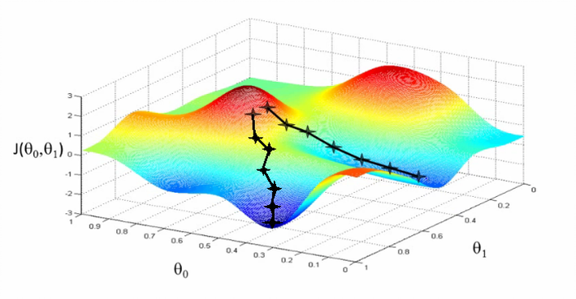

Posledních několik týdnů rozechvívá vlny mých sociálních sítí fenomén GPT-3. Jedná se o nedávno představený druh strojového učení, vytrénovaný společností OpenAI na rekordním množství dat. A zatímco se jedná jen o jazykový model, který má za úkol predikovat další token ve větě, výsledky a možnosti využití jsou místy dech-beroucí.
Následující obrázek pěkně ukazuje rozdíl v počtu parametrů oproti předchozím modelům:
(Ukázka postupu vývoje počtu parametrů neuronového modelu transformerů v čase. Zdroj:
Why GPT-3 matters.)
Pojďme se prvně podívat na ty zajímavější příklady použití GPT-3.
Asi nepřekvapí, že GPT-3 je schopné na základě krátkého promptu, který uvede téma textu, napsat příběh, článek, blog, nebo semestrální práci na zadané téma.
Podobné projekty zde byly už dřív, a byly například schopny dogenerovat další odstavce podobné původnímu. Za všechny například GPT-2 a talktotransformer. Sám jsem kdysi zkoušel Markovovo modely a rekurentní neuronové sítě, které přestože ve srovnání s GPT-3 působí jako hračka, také zvládly generovat zajímavé výsledky.
Gwern na tohle téma sepsal celý blogpost: https://www.gwern.net/GPT-3
Nějak se stalo, že GPT-3 se na množině dat naučilo sčítat a násobit čísla. Má sice problémy s většími čísly, občas dělá chyby, ale i tak je to fascinující, když si uvědomíte, že mu nikdo nevysvětloval koncept čísel, ani aritmetických operací. Představte si, že by vás nikdo neučil číst a vy se naučili používat aritmetiku na základě čtení knih v čínštině, kterou vás taky nikdo nenaučí.
Zajímalo by mě kam by se model dostal, kdyby mu někdo v trénovacích datech nacpal spoustu aritmetiky a matematiky.
První ukázka specializovaného použití, kde jsem se zarazil a došlo mi, že tohle nebude hračka jako GPT-2, byl tweet, kde Sharif Shameem napojil svůj projekt na GPT-3 API a „předpřipravil“ ho trochou ukázek CSS.
„Předpřipravením“ zde není myšleno trénování, ale jen uvedení kontextu předtím, než je modelu předán váš text. V tomhle případě bylo modelu ukázáno trochu CSS a on najednou zvládl generovat layout podle textového popisu.
Nejen že GPT-3 pochopil co se po něm chce, ale navíc zvládl vygenerovat i patřičný HTML a CSS kód. Pokud vám to zatím nepřišlo, tak tohle je opravdu k zamyšlení.
Video zahrnuje několik ukázek, některé fungují více, jiné méně, dokonce je tam i syntatická chyba. Ale vzhledem k tomu že model nikdo neučil používat HTML, nebo kódovat CSS, tak se jedná o fantastické výsledky. Tohle všechno pochytil z náhodných textů. Kdyby byl trénovaný speciálně na HTML / CSS, tak se účinnost jistě podstatně zvýší.
Sharif později přidal ještě další ukázku, kde GPT-3 vytváří aplikace v reactu i s funkčním kódem, kde je několik tlačítek updatujících data na backendu:
Nick Cammarata zkoušel používat GPT-3 jako terapeuta. První řádka, kterou je možné na obrázku vidět je ono již zmiňované „předpřipravení“, které dá GPT-3 kontext rozhovoru. V rozhovoru pak GPT-3 vystupuje jako John.
(Zdroj obrázku: https://twitter.com/nicklovescode/status/1283326066338062337)
Quasima Munye napadlo položit GPT-3 otázku z lékařského oboru:
(Zdroj obrázku: https://twitter.com/QasimMunye/status/1278750809094750211)
Normálním písmem je napsaný vstup pro GPT-3, tučně je napsaná jeho odpověď. Nejen že správně pochopil o čem otázka je, ale navíc na základě textového popisu nemoci korektně určil o jakou nemoc se jedná, jaký na ní použít lék a na jaké receptory v mozku ten lék působí.
Zde se začíná ukazovat síla GPT-3; protože není specializovaný na nic, má ohromný přehled úplně o všem. Včetně diagnóz nemocí, léků a molekulární biologie.
Harland Duman zkusil používat GPT-3 ukázkou kterou mají v pískovišti pro testování api. Ta funguje tak, jí popíšete co chce aby udělala v shellu operačního systému (modře vybraný text je „předpřipravení“). GPT-3 poté vypisuje konkrétní příkazy:
Sám jsem si s touhle verzí zkoušel hrát a musím říct, že zvládne i docela složité ukázky zahrnující kombinace pomocí pipes, find a xargs. Například mu nedělá problém věc jako komprese disku poslaná přes ssh. Za zmínku stojí, že celý proces funguje i obráceně, tedy umí převést příkaz na textový popis, který ho vysvětlí:
Thread zahrnuje různé i různé další ukázky, například programování v node.js, a taky zkoušky toho jak moc GPT-3 chápe čísla a různé vztahy mezi nimi.
Jordan Singer použil GPT-3 jako backend pro převod textového popisu na layout mobilní aplikace:
Amanda Askell vyzvala GPT-3 aby generoval kytarové noty popsané v ASCII obrázcích:
Modelu stačilo dát dvě ukázky co od něj očekává. Nejen že vygeneroval výše uvedené obrázky, ale i hudbu v nich, která nezní úplně špatně.
Zde je pěkně vidět ukázka toho, k čemu se dá model použít; tedy k transformaci dat z jednoho popisu do druhého. Například generování ASCII obrázků podobného druhu by bylo bez nějakého programu velmi otravné. Model však zvládne tenhle překlad poměrně jednoduše jen na základě pár ukázek vstup / výstup.
Paras Chopra nad GPT-3 postavil sémantický vyhledávací nástroj, kterému popíšete co vás zajímá a on vám to najde a vrátí URL kde je detailnější popis. Něco jako google, který ale rozumí vaší otázce, místo aby vyhledával podle klíčových slov v textu.
Uživatel s přezdívkou yash vytvořil učetnictví, kterému textově popisujete co jste udělali za transakci a ono to převádí do řeči čísel a faktur.
Francis Jervis vyzval model aby přeložil normálně zadaný text do „právničiny“, tedy jazyka používaného právníky. Výsledky jsou docela zajímavé.
Zábavná byla reakce Joschy Bacha, když někdo vzal jeho tweet o GPT-3, který úplně nepochopil, a požádal GPT-3, aby ho vysvětlil.
Co se vysvětlování textu týče, tak zajímavou míru pochopení a modelování světa ukazuje model v tomto tweetu, kde byl dotazován na to čím jsou si věci podobné.:
Asi je z těch ukázek jasné, k čemu to je. Obecně má model určité pochopení textu, které se naučil na přečtených datech. K tomu ale má taky „znalosti“ z těchto přečtených dat.
Model funguje formou otázka/odpověď a je možné se ho tedy ptát na různá fakta, nechat ho odvozovat logické věci, zvládá částečně i matematiku a symbolické uvažování (umí například řešit jednoduché rovnice). Obecně se dá říct, že vyniká v překladu přirozeného jazyka na něco jiného. Na řešení otázky. Na odpověď. Na kód. Mezi lidskými jazyky.
Model rozhodně nefunguje bezchybně, ale i tak je to mnohem dál, než všechny předchozí projekty. Kdybych to měl k něčemu přirovnat, tak je zhruba pod úrovní velmi hloupého člověka, který má ale ohromné (encyklopedické) znalosti na všechna možná témata.
To vše bez specializace, tedy obecný model. Tento model je možné teoreticky dále vzít a specificky ho dotrénovat pomocí ukázek, například z oboru právničiny, nebo v překladech, či k programování. Tím se úspěšnost ještě zvýší. Nutno ovšem dodat, že tohle trénování může dělat jen někdo kdo model vlastní, a nejedná se o takzvané „předpřipravení“ zmíněné výše, které může udělat kdokoliv pouhou interakcí s modelem. Vlastníkem je momentálně pouze OpenAI.
Pojďme se nyní podívat jak to přibližně funguje.
V případě GPT-3 jde o takzvaný „unsupervised learning“, tedy druh strojového učení, které se učí samo z dat. Princip je zhruba takový, že neuronovou síť krmíme velkými množstvími textů, a ona si v tom sama najde vzory.
GPT-3 pracuje nad vektory tokenů, které si můžeme představit podobně jako v známém word2vec.
Word2vec prorazil díru do světa před několika lety, když Tomáš Mikolov publikoval v Brně svojí dizertační práci o použití neuronové sítě. Jím popsaná síť je schopná se na základě velkého množství textu sama naučit reprezentovat slova ve vícedimenzionálním prostoru tak, že významově podobná slova tvoří v tomto prostoru clustery. Zároveň jsou clustery v prostoru umístěny tak, že je možné nad jejich reprezentací provádět významovou aritmetiku.
Co si pod tím konkrétně představit;
Více-dimenzionální prostor si můžete představit graficky například tak, že ke klasickým osám X, Y a Z přidáte další. Zatímco bod ve 3D prostoru je určen maticí obsahující například souřadnice ve tvaru [1, 3, -10], bod v mnohodimenzionálním prostoru, který umí vytvářet word2vec je tvořen cca sto až tisíci čísly popisujícími jeho souřadnice.
Clustery je možné si představit tak, že body slov v tomto prostoru, které jsou významově podobné, jsou poblíž sebe. Zde jsem si dovolil trochu upravit klasický ukázkový obrázek, aby byly dobře vidět dva různé clustery, které jsou v něm zakroužkovány červeně. V jednom se nám shlukují mužské výrazy, v druhém ženské.
Znovu opakuji, že pro jednoduchost a představitelnost jsou použity tři osy, protože zobrazit jich tam tisíc není jednoduše možné ve dvouosém souřadnicovém prostoru dostupném pro obrázky.
Nyní se konečně dostávám, k tomu čím word2vec zaujal svět; k významové aritmetice. Nejen že totiž umí vytvořit výše ukázané clustery, ale zároveň je v prostoru umísťuje tak, že mezi nimi jsou zachovány vztahy. Můžete tak například vzít vektor pro slovo žena, odečíst od něj vektor pro slovo muž, a tento výsledek zachycující abstraktně pohlaví přičíst k vektoru slova král, čímž dostaneme vektor slova královna.
Píšu záměrně „vektor slova“, výsledkem je totiž matice čísel, která určuje souřadnice v mnohodimenzionálním prostoru. Tuto souřadnici ovšem můžeme přeložit zpět na text poté co nad ní provedeme operace.
Zde jsou ukázky různých operací nad vektory:

(Zdroj obrázku: Word Embeddings)
Například jde zjišťovat časy jednotlivých slov, nebo třeba hlavní města zemí.
Fascinující na tom je, že word2vec si sám vytváří databázi různých faktů a vztahů mezi nimi, jen na základě toho, že ho nakrmíme velkým množstvím textu, ze kterého si sám tyto vztahy odvodí.
GPT-3 také operuje nad „tokeny“, což jsou také mnohodimenzionální souřadnice ve vektorovém prostoru. Může se jednat o samostatná slova, nebo někdy může dojít k rozdělení na několik slabik, či podle unicode znaků. Detaily nejsou úplně důležité. Na rozdíl od word2vec je toto takzvané „embedování“ slov jen poměrně nezajímavý vstupní proces.
GPT-3 je algoritmus z rodiny Transformerů, tedy druhu architektury, jenž se často používá v NLP (Natural Language Processing, zpracování přirozené řeči). Zkratka GPT znamená Generative Pre-trained Transformer, tedy Generativní Předtrénovaný Transformer. Slovo „generativní“ naráží na termín z machine learningu.
Transformery používají takzvaný encoder-decoder model. GPT a další používají pouze decodery, kterých na sebe připojí mnoho (24 v případě GPT-2, 96 v případě GPT-3). Každý decoder má vícero vrstev, z nichž každá vstupní vektory různě hodnotí, vytváří další vektory definující vztahy s dalšími slovy (vektory) ve větách, přidává indexy a obecně další metadata, a tento výsledek pak posílá dál do neuronové sítě. Velký důraz je kladen na „self-attention“ vrstvu.
Zde je pro zajímavost vidět architektura decoder bloku z GPT-2:
(Obrázek pochází z https://www.researchgate.net/figure/a-GPT-2-architecture-For-more-info-on-individual-operations-see-Vaswani-et-al-2017_fig1_335737829)
Jay Alammar sepsal perfektní sérii článků, kde vysvětluje trasformery a i GPT-2, na kterém je GPT-3 založený, graficky a krásně do detailu:
Specificky poslední článek vysvětluje „self-attention“ vrstvy, tedy jak model vypočítává které slovo má jakou pozornost a souvislost s ostatními, a teprve pak se tím krmí vnitřní neuronové sítě.
Oficiální paper uvádí že k trénování sítě bylo použito cca 499 miliard tokenů, zahrnujících mimo jiné sběr dat z internetových stránek, části wikipedie a různé knihy. Například jen dataset Common Crawl, který tvořil přibližně 82% trénovacích dat, zabíral po vyfiltrování a vyčištění 570GB v čisté textové podobě.
Trénováním na superpočítači byl stvořen model, který obsahuje 175 miliard parametrů. Parametry jsou jednak různé vektory, určující například self-attention vrstvy, ale také přímo nastavení neuronových sítí. Model objemem parametrů přibližně stokrát překonává předchozí GPT-2.
Pro ilustraci; je odhadováno, že výkon potřebný k trénování sítě odpovídal zhruba 355 GPU let (autoři v paperu uvádějí několik tisíc petaflop/dnů), tedy let běhu moderní výkonné grafické karty, což údajně odpovídá částce ~4.6 milionů dolarů.
Vysokoúrovňový princip fungování GPT-3 je krásně vysvětlen v článku How GPT3 Works - Visualizations and Animations. Protože zde nehodlám krást animace, které autor použil v článku, zde je jen krátký textový popis:
Dataset ukázek textu je použit k trénování sítě tak, aby predikovala výskyt následujícího tokenu. Podobně jako například markovovy řetězce umí na základě statistiky predikovat pravděpodobnost výskytu dalšího písmena, tak GPT modely na základě vstupních dat zkouší odhadnout pravděpodobnost výskytu dalšího tokenu.
Pokud se netrefí na očekávaný token (prostě další slovo z datasetu), jsou použity techniky trénování tak dlouho, dokud token není odhadnut správně.
Například zadáme modelu na vstup větu:
Byl pozdní večer – první máj – večerní máj – byl
a očekáváme doplnění dalšího slova. Pokud síť doplní slovo „lásky“, pokračujeme dál. Pokud ne, provádíme trénování a úpravy různých vektorů vhodnými algoritmy, dokud model správně neodhadne slovo „lásky“. Jakmile se trefí, pustíme na vstup
Byl pozdní večer – první máj – večerní máj – byl lásky
.. a opakujeme postup, dokud netrefí správně slovo „čas“.
Data, která dáváme modelu takto dokola na vstup nejsou nekonečná, tvoří jakési posuvné „kontextové okénko“, které má v případě GPT-3 délku 2048 tokenů.
Algoritmus pro trénování byl použit Adam (detaily nastavení v paperu na straně 43), což je optimalizační technika založená na stochastickém sestupu gradientu, popsaná například zde: Adam — latest trends in deep learning optimization.
Pod výrazem „stochastický sestup gradientu“ si představte druh úloh z matematiky, které se zabývají nalezením globálního minima (či maxima) s co nejmenší námahou.
Například pokud by se jednalo o 3D prostor, můžeme si představit pohoří se spoustou údolí a kopců, které jsou tvořeny body v našem prostoru, a cílem je najít poslepu to nejhlubší údolí. Máme ale k dispozici jen prst, kterým můžeme do mapy ze-shora bodat, a tím prstem cítíme do jaké výšky jsme narazili a jestli se terén svažuje nahoru, nebo dolu.

(Obrázek pochází z Does Gradient Descent Algo always converge to the global minimum?)
Jedním z možných algoritmů je prostě bodnout někam náhodně do mapy a pak zkusit bodat do kruhu kolem, jestli jsme se třeba netrefili do kopce a někde kolem není sestup do údolí. A když jo, tak to celé zopakujeme tím směrem, kde je údolí. Některé jiné techniky používají například postup tím směrem, kudy se cesta minule svažovala dolu.

(Obrázek pochází z článku What is Stochastic Gradient Descent (SGD))
Stochastické algoritmy jsou druh matematických algoritmů, které se snaží s co nejmenším počtem bodnutí do mapy najít ne jen nějaké údolí, ale rovnou to nejhlubší údolí. To může zahrnovat různé chytristiky, jako třeba „nevzdávej se potom co narazíš na první údolí, ale zkus ještě sejít z kopce jiným směrem“, nebo třeba opětovné lezení na kopec, či náhodnou změna místa do kterého teď bodáme.
Tahle úloha nám může připadat lehká, ale jen protože se díváme na kopec očima, které každým pohledem přijímají miliardy fotonů odražených od kopce. Pokud bysme vnímali svět kolem sebe jen jedním fotonem, taky by bylo v našem zájmu mít algoritmus, kterým si vnímání světa kolem sebe co nejvíc zrychlíme. Každé testování kopce nás stojí bodnutí prstem do mapy, vyslání či přijmutí fotonu, nebo čistě prakticky výpočetní instrukce, a tedy čas a energii.
Adam je efektivní druh hledání mnohodimenzionálních údolí v mnohodimenzionálních prostorech. Způsob jakým funguje je kompromis, aby bylo v datech třeba co nejméně-krát bodnout do mapy (tedy zjistit jaká je tam hodnota a sklon), a celé to tedy fungovalo co nejrychleji a našlo to zároveň co nejhlubší údolí.
Ta údolí se hledají proto, že typicky máme nějaký stav modelu, který vrací špatná data, a my chceme změnit jen minimální množství parametrů co nejmenším způsobem tak, aby nám vracel dobrá data.
To je matematicky ekvivalentní tomu, že zkoušíme najít úpravu terénu, kterou když odečteme od současné podoby modelu, tak nám najednou vrací dobrá data. Minimální úpravu terénu chceme dělat protože předpokládáme, že model pro ostatní data vrací dobré výsledky. Kdybychom tedy udělali větší úpravu než je nutné, tak by ostatní věci, co už fungovaly, najednou mohly přestat fungovat.
Tohle celé děláme na kopci, který má 175 miliard bodů v mnoha dimenzích. Jestli to chápu z paperu správně, což možná nechápu, protože to tam není jasně řečené, tak GPT-3 používá pro embeding slov 12 288 dimenzí, které je možné si představit jako osy v grafu.
Říká se, že poslední renesanční člověk byl pravděpodobně Leonardo da Vinci. Tedy člověk, který znal všechna umění a řemesla své doby. Od té doby, praví rčení, je svět tak složitý a specializovaný, že nikdo nemůže znát všechno.
GPT-3 sice není člověk, inteligenčně je o hodně níž, ale renesanční rozhodně je. Tím že se učil čtením textů ví něco prakticky o všem, o čem něco četl. Jeho možnosti chápání, udržení kontextu a logicky odvozovat věci jsou omezené, ale jeho znalosti dost možná už v současnosti jsou větší, než libovolného jiného žijícího člověka.
Článek je možná laděn v až moc pozitivním duchu; je třeba přiznat si, že GPT-3 má stále spoustu omezení, dělá spoustu stupidních chyb a celkově rozhodně není dokonalý.
Na druhou stranu je nutné dodat, že i současná verze je snad jako první použitelná pro spoustu věcí, i se všemi svými omezeními. To se stále bavíme o verzi, která není specificky trénovaná pro konkrétní činnosti (takzvaný fine-tuning), což má být další feature kterou chce OpenAI zpřístupnit.
Pojďme se nyní podívat, jak se to vlastně celé prakticky používá.
Přístup do API se nachází na adrese https://beta.openai.com. Zde je možné najít nějakou základní dokumentaci (rozšířená deprecated dokumentace je na notionu), popis použití, tutoriály a různé další relevantní informace.
Vpravo nahoře je možné si vybrat z několika různých modelů, OpenAI samotné doporučuje model davinci. Ostatní modely jsou také pojmenovány podle různých historických postav.
Každá ukázka se také dá zobrazit jako volání API pomocí CURL nebo Pythonu. Vpravo je možné vybrat si různé parametry, které model konfigurují co se týče délky vráceného textu, náhodnosti a tak podobně.
Celkem nepřekvapivě se většina práce s GPT-3 smrskává do vytvoření vhodného „předpřipravení“, a nastavení správných parametrů. Jak už jsem vysvětloval, model jen doplňuje slova (tokeny). Pokud po něm něco chcete, je třeba ho dostat do „nálady“ tak, aby mohl doplnit očekávané výsledky.
To bohužel nemusí být jednoduché. Často se mi třeba podařilo vyvolat divoké chování, když jsem špatně nastavil nějaký parametr. Občas model prostě napíše, že odmítá odpovědět, a chová se tak trochu jako naštvané dítě. Jindy si prostě vymyslí krycí historku, kterou se totálně utrhne ze řetězu očekávaného výstupu, nebo se pustí do tautologií.
Co se týče generování textu, převodu na různé jiné popisy, nebo vysvětlování věcí, dařilo se mi během chvíle dosahovat očekávaných výsledků. U různých jiných úkonů jsem už ale zas tak moc úspěšný nebyl, a očekávám, že nejspíš vyžadují netriviální množství času hraní si s parametry. Například různé odvozování faktů, či snaha donutit model generovat ASCII arty (jako například ty noty v ukázkách nahoře), mi vůbec nevyšla podle očekávání.
Myslím že se zpřístupněním API se otevře nová pozice „kormidelníka“ výstupu, tedy druh specializace lidí, jenž budou nabízet generování „předpřipravení“ a nastavení parametrů pro řešení konkrétních problémů.
Člověk se samozřejmě musí zamyslet nad tím, kam tohle spěje. Vybavuje se mi ilustrace z článku Tima Urbana o umělé inteligenci:
(Obrázek pochází z článku The AI Revolution: The Road to Superintelligence)
GPT-2 byla taky taková roztomilá opička, která uměla doplňovat texty. Sám jsem si s ní chvíli hrál a krmil jí kousky textů mých oblíbených autorů, načež mě fascinovalo, když pokračovala přesně jejich stylem, i když z většiny se jednalo o text, který nedával moc velký smysl.
Jeden den jsem si říkal, jak nám to vývoj na poli umělé inteligence roztomile pokračuje, druhý den najednou čumím že GPT-3 není zas o tolik níž, než úroveň pro „Dumb human“, tedy hloupého člověka.
Což je zarážející, vzhledem k tomu že se jedná o stejný druh machine learningu jako GPT-2, jen natrénovaný na větším množství dat.
Architektura GPT-3 je do jisté míry velmi hloupá. Kam to asi tak půjde dotáhnout, pokud se bude trénovat na specifické dovednosti, ale například se zvětší kontextové okno, přidají různé druhy paměti (krátkodobá, dlouhodobá), matematické koprocesory a tak dál? Momentálně probíhá tréning pouze na textu sklizeném z internetu. Co když k tomu přihodíme například blok symbolické matematiky a donutíme AI se s ním naučit pracovat?
Před několika lety jsem četl články Tima Urbana na téma umělé inteligence, nebo možná lépe strojového učení, a snah Elona Muska demokratizovat ho. Přestože jsem s nimi souhlasil, tak jsem je skutečně nechápal, ne tak jak je chápu teď, když jsem měl na vlastní kosti možnost zažít si šok z pokroku.
Představte si model GPT-10, který je ve všech ohledech lepší než člověk. Větší pochopení psaného textu, schopnost udržet kontext, dělat matematiku, logiku, programování a prostě cokoliv. K tomu masivní korpus znalostí celého světa.
I když předpokládáme, že ho nebude ovládat žádná zlá společnost, už samotné schopnosti, které má GPT-3 jsou dost husté na to abych si dovedl představit tisíce různých užitečných použití k získání výhody a náskoku nad konkurencí. Hypotetické GPT-10 by společnosti, či vládě, která ho bude vlastnit, dávalo ohromné možnosti.
Podle mého je nutné víc podpořit demokratizaci AI, tedy ten proces, kdy autoři AI si ho nenechávají pro sebe, ale sdílejí ho se světem, ale zároveň taky všude možně probíhají podobné experimenty.
OpenAI se rozhodla, že model nezpřístupní veřejnosti ve formě surových dat modelu, ale plánuje ho časem zpřístupnit formou placeného přístupu k API. Tento přístup je momentálně v beta režimu. To znamená, že můžete požádat o přístup, ale zařadíte se pouze k desítkám tisíc dalších čekajících, na které se snad časem dostane. Sám jsem se k přístupu registroval před asi měsícem, a zatím se nikdo neozval.
Ačkoliv by se mi líbilo mít přístup přímo k modelu samotnému, a mít tedy možnost ho dále trénovat a dělat na něm experimenty, je nutné připomenout, že trénování a pravděpodobně i běh modelu vyžaduje superpočítač. Superpočítače jsou nejenom drahé na pořízení, ale také na provoz.
Issue na Githubu projektu zmiňuje nějaká konkrétní čísla, která jsou ovšem založená pouze na odhadech. Zmíněno je 700+GB paměti a cca 22 grafických karet, každá s 16GB RAM, s tím že i tak by model pravděpodobně běžel pomalu.
Na nějaký vlastní odhad nemám dostatečný technický backgroud. Faktem ovšem je, že OpenAI uzavřela partnerství s Microsoftem. Ten nedávno oznámil, že superpočítač pro OpenAI má být provozovaný v Azure cloudu. Celkem by měl mít 285 000 CPU jader a 10 000 GPU.
Nepodařilo se mi zjistit, jestli už byl použit pro trénování a provoz GPT-3, nebo se jedná o budoucí projekt. Některá oznámení jsou z roku 2019, a tváří se jako že byl někdy koncem roku předán OpenAI, jiná oznámení se tváří jako že byl předán teprve někdy v půlce 2020.
Každopádně to trochu dává představu ohledně hardware a ohledně ceny jednoho požadavku na API.
Osobně mi byl přístup zapůjčen někým kdo ho už má. Pokud ve svém sociálním okolí nikoho takového nemáte, je možné získat přístup přes hru AI Dungeon.
AI Dungeon využívá model GPT-2 pro hraní textové hry, kde si můžete vybrat z několika různých tématických světů. Platícím hráčům (týden zdarma, potom $9.99/měsíc) však nabízí zprostředkovaný přístup k GPT-3. Ten je sice „předpřipravený“ scriptem pro uvedení téma textové hry, je možné ho ovšem vlastním textem „předpřipravit“ na něco jiného, a vyzkoušet si tak na něm interakce s GPT-3.
Na twitteru se dají najít poměrně zajímavé ukázky interakce s GPT-3. Některé jdou do poměrně metafyzických témat, když například někdo zjistil, že GPT-3 dělá záměrně v rozhovorech chyby, které by dělala reprezentovaná postava. Ukazuje se tedy že v „hlavě“ v rámci autenticity modeluje osobnost postavy včetně chyb.
(Zdroj obrázku: https://twitter.com/kleptid/status/1284069270603866113)
To že teď čteme o GPT-3 znamená, že jsme masivně pozadu, a že v OpenAI, ale pravděpodobně i na mnoha dalších místech na světě, se už vaří další verze.
Zajímavý je model BERT (detaily), který je vyvíjený v několika jiných institucích. Za zmínku taky stojí projekt HugingFace, který na githubu sjednocuje v jednom repozitáři všechny možné architektury a datové zdroje pro mnoho různých transformerů.
Ten kdo má dnes přístup k superpočítači a možnosti tam zkoušet a zkoumat alternativní přístupy, ten může zítra doslova udělat díru do světa, jako se to povedlo třeba Tomášovi Mikolovi s word2vec.
Ačkoliv v Čechách se zatím informace o GPT-3 prakticky nedostaly ani do odborné literatury, v anglicky hovořících médiích vznikl „hype“, tedy jakýsi kult místy až přehnaného adorování.
To samozřejmě vedlo k proti-reakci, kde u spousty lidí je teď moderní GPT-3 odsuzovat, jako že je „přehypované“ a k ničemu.
Osobně si myslím, že nemá smysl podléhat ani jedné vlně. GPT-3 je jen nástroj, který můžeme zkusit používat k něčemu produktivnímu. Nemá smysl ho „hejtovat“ že je k ničemu, když nezvládne vyřešit co po něm chceme, ani adorovat jako že vyřeší všechny naše problémy.
Osobně se k tomu stavím asi jako ke kompilátoru; je užitečné vědět, že to existuje, může být užitečné to zkusit použít na nějaký svůj projekt, kde mi ušetří práci. Teoreticky to má potenciál pro automatizaci nudných opakovaných záležitostí.
Jako už jsme si řekli, GPT-3 není nástroj pro každého, a není to ani nástroj pro každou věc.
OpenAI v roce 2018 předvedlo první generaci, která dokázala reagovat na text. Už ta byla poměrně dobře použitelná, ale pouze v rámci několika témat. A to je vlastně tak trochu celý problém.
Doufám, že se časem podaří otevřít zdroje, které OpenAI využívá, a bude možné vyzkoušet trénování s různými databázemi a jinými typy dat.
Pokud chceme GPT-3 hodnotit, je třeba si uvědomit, že se jedná o reálnou věc, nikoliv o nějakou hypotetickou konstrukci nebo výzkumný výsledek. V praxi je sice OpenAI GPT-3 ještě daleko od cíle, ale je to vlastně nejlepší model široce dostupný veřejnosti.
A samotné GPT-3 přináší obrovský objem dat. To vše je důvodem, proč se dnes jedná o jeden z nejvýznamnějších výzkumných úspěchů v oblasti AI.
Zdá se, že se všechno docela rychle hýbe k něčemu docela zajímavému. Nejsem si jistý, zda tohle je ono, ale velmi mě to zaujalo. Prakticky každý den se objevuje nějaká nová věc, která se dá použít pro vytváření lepších algoritmů. Jakékoliv inovativní nápady, různé experimenty, zajímavé datové zdroje a koncepty jsou velmi vítány ;)
Původně jsem výše uvedený „závěr“ neplánoval, když jsem však zkusil GPT-3 nakrmit částí tohoto článku (bere jen 2048 tokenů), napsal ho sám i s názvem kapitoly a markdownem pro nadpis. Umí totiž i česky, i když pár chyb (hlavně ve skloňování) jsem musel opravit. Samozřejmě také předchozí ukázku nezvládl na první pokus, musel jsem to pustit přibližně desetkrát, než jsem z něj dostal něco podobně koherentního. Výsledek je složený z několika průběhů, ale i tak je zajímavý.
Ukazuje to pěkně čeho všeho je model schopný. Například GPT-2 sice taky zvládal češtinu, ale velmi bídně, věty působily dost nekoherentním dojmem a často na češtinu odpovídal anglicky. Určitě by nedokázal takhle jednoduše psát sám o sobě.
Jsem zvědavý kam tohle všechno povede. Momentálně je technologie machine learningu a „umělé inteligence“ stále ještě v plenkách, zároveň se ale rozvíjí děsivou rychlostí.
Už několik let si vedu poznámky na téma „k čemu všemu bych využil osobního skřeta“, kam se snažím shromažďovat druhy prací a otravností, u kterých by bylo fajn, kdyby je za mě řešila nějaká automatizace. Například se jedná o generování metadat k různým projektům.
Těším se na dobu, kdy budu moct použít nějakou podobně užitečnou AI, jenž by za mě tyhle nudné tasky dělala, bez toho aniž bych musel strávit několik dní nastavováním různých šablonovacích enginů a psaním vlastních scriptů. Taky by se mi velmi hodilo něco, co dokáže prohledávat počítač podle zadaných pravidel a sémanticky rozumí tomu co po tom chci. Občas se například snažím najít email, či dokument, aniž bych si pamatoval konkrétní klíčová slova.
Spousta lidí má ze stále lepší „AI“ (ve skutečnosti machine learningu) strach. Do jisté míry to chápu. Je třeba si ovšem uvědomit, že se nejedná o magii, je to prostě jen druh programu.
Z hlediska „normálních lidí“ můžete být v klidu; „umělá inteligence“ v tomhle podání je jednodušší a dává vám větší možnosti použití, než klasické počítače a programování. Pokud zvládnete delegovat práci a popsat zadání dalšímu člověku, zvládáte používat i tenhle druh umělé inteligence. Nepřicházíte o možnosti, naopak je tím získáváte.
Teď se jen postarat o to, aby měli všichni k dispozici přístup. Bylo by fajn, kdyby se z toho nestal zdroj útlaku držený v rukou několika jedinců a korporací, které ho využijí k vyřazení konkurence a horším věcem (viz třeba čínská totalita a jejich sociální kredit), ale nástroj pro obohacení možností a schopností každého z nás.

{kind=link}
{kind=link}
{kind=link}
{kind=link}
{kind=link}
{kind=link}
{kind=link}
{kind=link}
{kind=link}
{kind=link}
{kind=link}
{kind=link}
{kind=link}
{kind=link}
{kind=link}
{kind=link}
{kind=link}
{kind=link}
{kind=link}
{kind=link}
{kind=link}
{kind=link}
{kind=link}